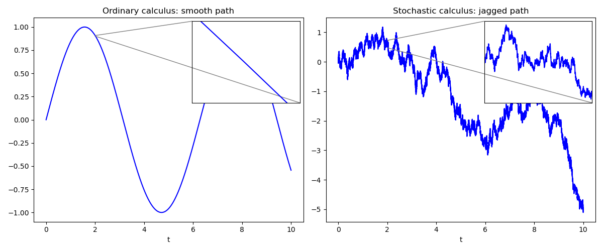

The term "Quadratic Variation" may not inspire much excitement—it's no "risk-neutral pricing" or "Black–Scholes formula." But you don't really understand those big ideas until you first understand this quietly powerful one. Why? Because:
Quadratic Variation is what differentiates stochastic calculus from ordinary calculus.
Smooth vs. jagged lines
In ordinary calculus, the paths of functions are smooth—zoom in on a small enough interval, and the curve looks almost like a straight line. In stochastic calculus, the paths of Brownian motion are rough: no matter how far you zoom in, the curve remains jagged and unpredictable. This persistent roughness is exactly what quadratic variation measures—the way randomness accumulates over time.

Brownian motion: deterministic quadratic variation
For Brownian motion, the increments behave differently:
$$W(t + \Delta t) - W(t) \sim \mathcal{N}(0,\, \Delta t).$$The expectation of the quadratic variation works out cleanly:
$$\mathbb{E}\!\left[[W]_T\right] = \mathbb{E}\!\left[\sum_{k=0}^{n-1}\bigl(W(t_{k+1}) - W(t_k)\bigr)^2\right] = \sum_{k=0}^{n-1} \Delta t = T.$$In fact, it turns out that $[W]_T$ is deterministic! Here's the intuition: although each increment is random, they are all independent and have the same mean, $\Delta t$ (or $T/n$). When you add a bunch of them, the sum approaches $T$, as the law of large numbers kicks in. The average squared increment converges to its expectation $\Delta t$. Multiplying by $n$ then stabilizes the sum at $T$.
That's why Brownian motion has deterministic quadratic variation:
$$[W]_T = T.$$The path is wild, but the accumulated roughness ticks forward like clockwork. In Itô calculus this is written as:
$$\int_0^T (dW_t)^2 = T,$$or, in shorthand:
$$(dW_t)^2 = dt.$$This little identity is the notational backbone of Itô calculus—it's the reason new rules (like Itô's Lemma) exist at all.
The fundamental idea
Quadratic variation doesn't just tidy up definitions. It explains why Brownian motion is rough, why stochastic integrals make sense, why martingales behave as they do, and why measure changes work.
Strip quadratic variation away, and the entire machinery of stochastic calculus collapses.
That's why this dull-sounding term is actually the most fundamental concept in the field. Understand it, and the rest of stochastic calculus — Itô's Lemma, martingale representation, option pricing — stops looking like magic and starts looking inevitable.